A ribbon like a desktop GIS, 2D and 3D maps, an AI Assistant that turns a sentence into a workflow, and 30 new tools: vectors, terrain, conversion, accuracy assessment, time series, georeferencing and image enhancement. Every screenshot is the real app on real data: Sentinel-2 and the Copernicus 30 m DEM over Nandi Hills, and a land-cover map of north Bengaluru.
All of it is in version 0.0.3 beta and later for Mac and Windows, free; hydrology, floods and models are new in 0.0.4. Test it on free sample data for six sites.
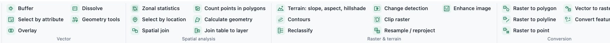
A Word-style ribbon (File, Insert, Analysis, History, View, Help) and as many 2D and 3D maps as you like, each with its own Contents. Copy layers between maps with Ctrl+C / Ctrl+V.
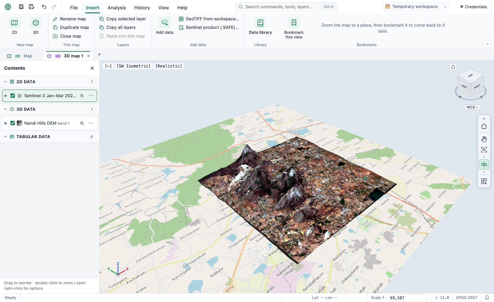
Type a request such as “a hillshade and contours every 50 m of the DEM, and the land cover as polygons”. The Assistant looks at your layers, plans the steps with the app's own tools, checks the plan, and shows it to you before anything runs.
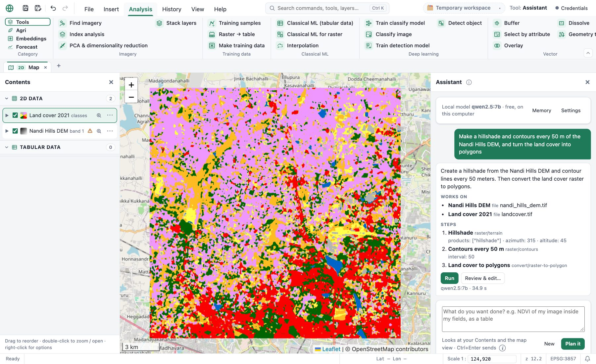
Everyday geoprocessing on shapefiles, GeoJSON and KML, measured in metres on the ground. Here: a 2 km grid (fishnet) over north Bengaluru, and the share of each land-cover class in every cell (zonal statistics). Every tool runs as a background job, is kept in the History, and can be a Workflow step.
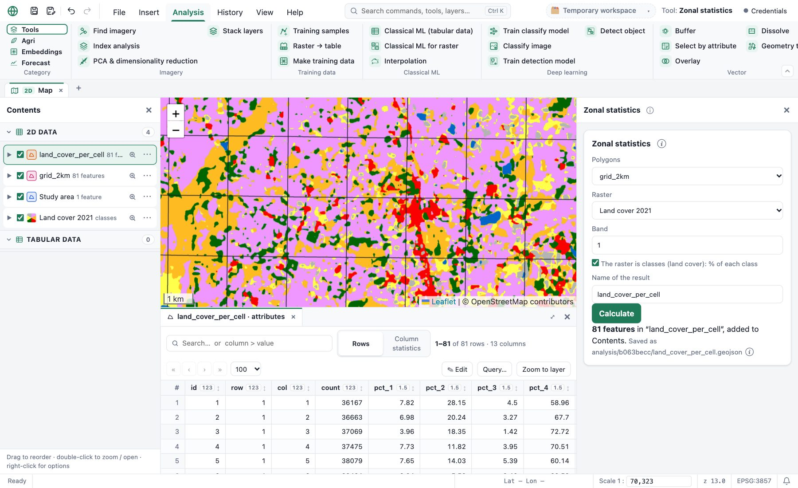
From a DEM to slope, aspect and a shaded relief, and contour lines every few metres. Pixel sizes are worked out in metres, also for DEMs in degrees.
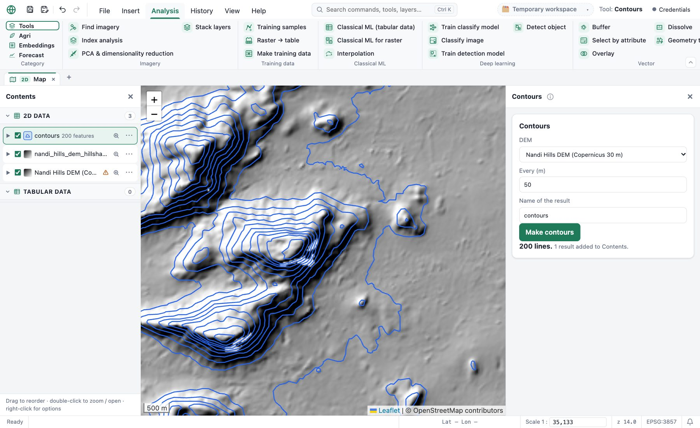
Turn a classified map into polygons with their class and area, ready for reports and GIS. Here 4,501 land-cover polygons, small patches merged away first.
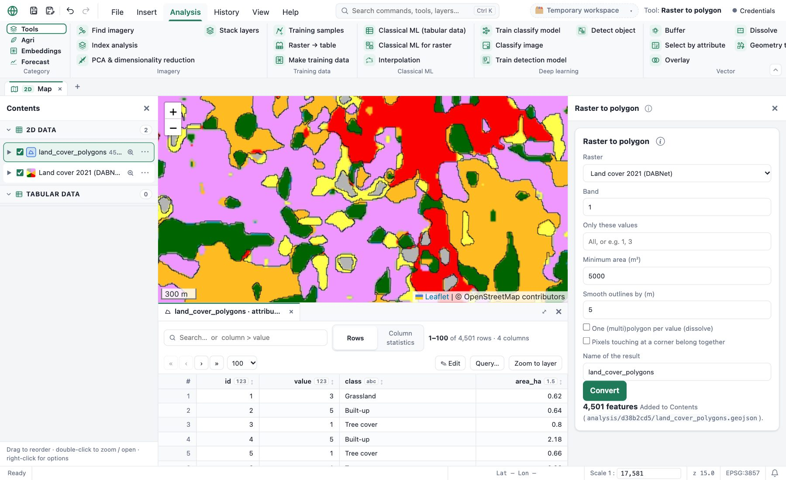
Enhance an image before detection, segmentation or embeddings, and compare with the original with Swipe. Left: Sentinel-2 as downloaded; right: stretch, CLAHE and sharpen.
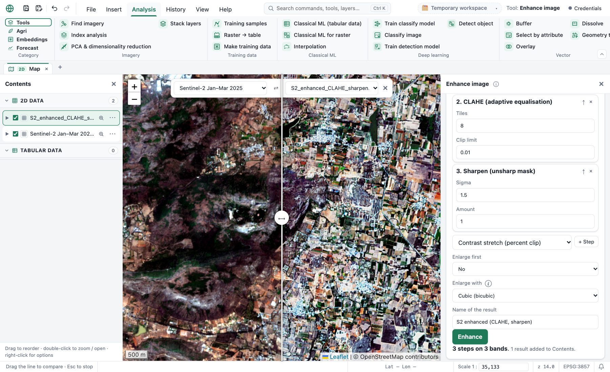
Random points per class, labelled one by one on the map with keys 1–9 (the map's own class hidden so it doesn't sway you), then the confusion matrix, overall, user's and producer's accuracy and kappa.
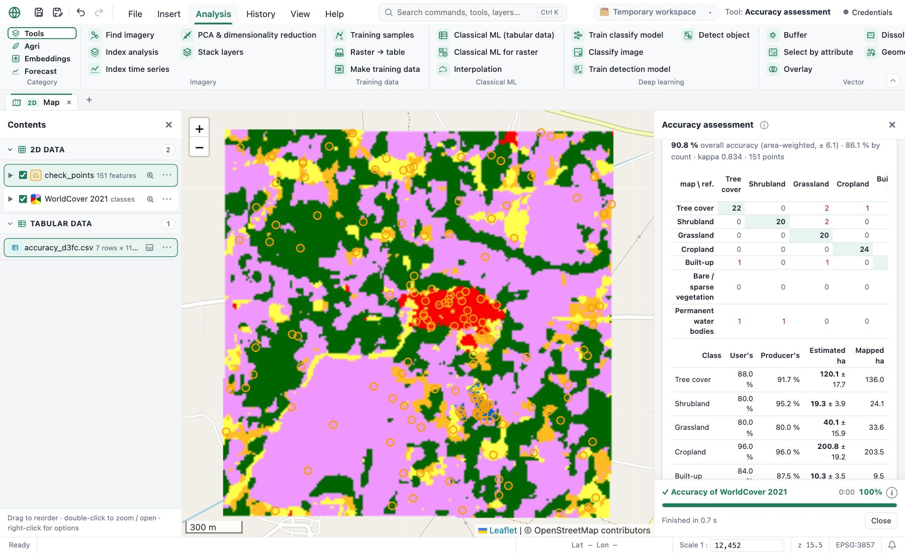
Click a field: NDVI (or EVI, NDWI, NDMI, NDRE, SAVI) from every Sentinel-2 scene of the period, straight from the free catalogue. Only the field's pixels are read, clouds are masked, and the curve shows sowing, growth and harvest.
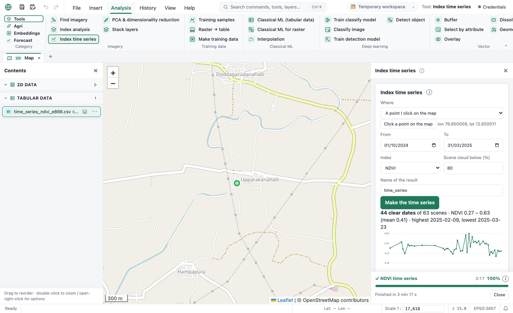
Load a scanned map, a plan or a screenshot, click a place on it and the same place on the map, a few times. Each point's residual shows a wrong click at once.
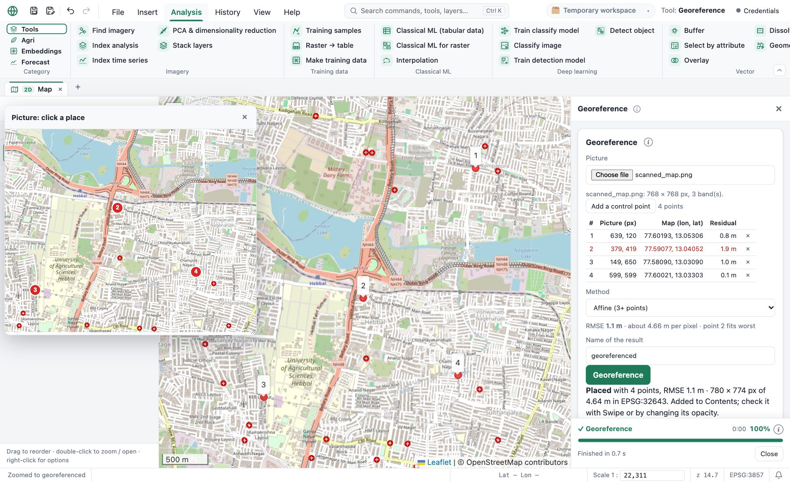
A colour per value of a field (building type, crop, class), or classes of a number (area, NDVI, % cropland) by quantiles, equal intervals or natural breaks, with colour ramps and a legend in Contents.
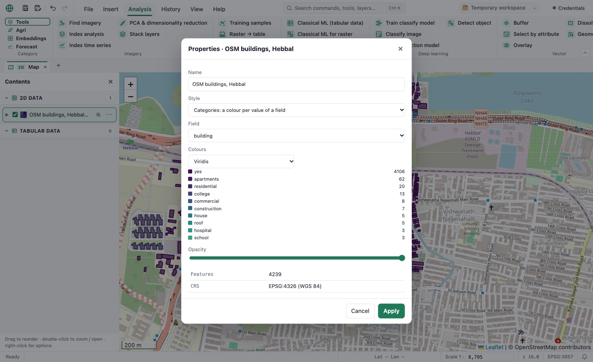
Any workflow can run by itself every few hours, daily or weekly while the app is open, with dates that move with the run day. An alert tells you when a result crosses a limit, e.g. a field's NDVI dropping below 0.3.
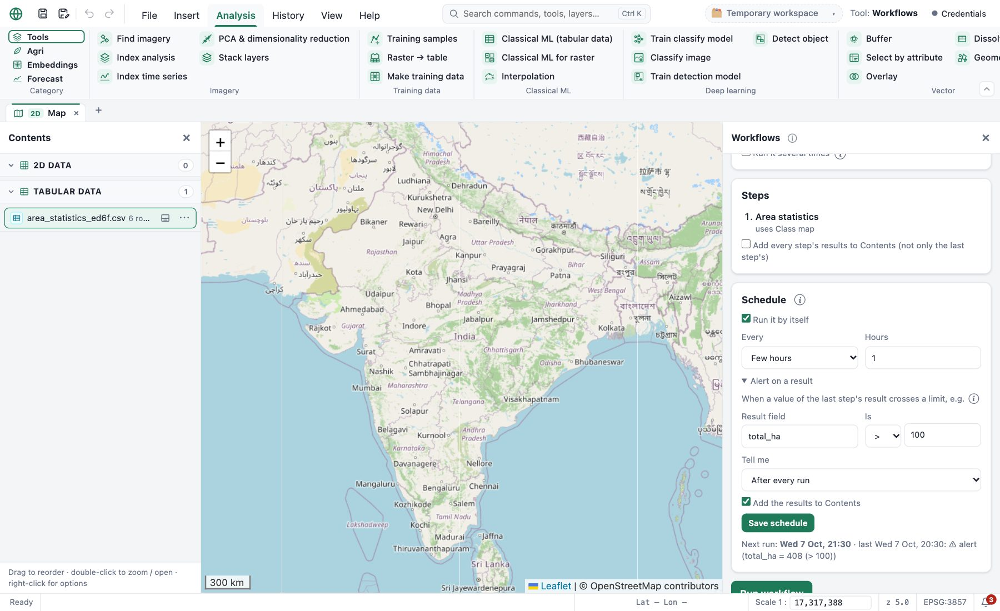
A Hydrology category with every watershed and flood tool, from rainfall data to a 2D flood simulation, and models that learn: GR4J, LightGBM and LSTM streamflow models scored on years they never saw, flood susceptibility with spatial cross-validation, and a SAR flood map refined by machine learning.
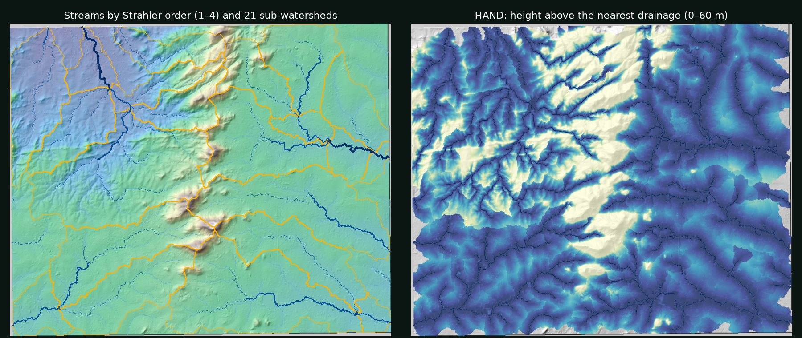
DEM preparation (fill, breach, burn streams), D8 / D-infinity / MFD flow, watersheds of points with snapping and nesting, sub-watersheds, stream networks with Strahler and Shreve order, morphometry and conservation priority.
CHIRPS rainfall and 2- to 100-year design storms, SCS curve-number runoff, design flood hydrographs, RUSLE soil loss with sediment yield.
GR4J calibrated automatically, LightGBM / Random Forest and an LSTM, compared by NSE and KGE on unseen years against a seasonal baseline.
2D flood simulation (local inertial, as LISFLOOD-FP), flood from HAND, flood depth (FwDET), flood impact on crops, people, buildings and roads, flood susceptibility.
Groundwater potential zones weighted by AHP and checked against wells; check-dam and pond sites with area–capacity curves.
Viewshed, LiDAR point clouds, routing on OpenStreetMap, pansharpening, spectral unmixing, Sentinel-5P air quality, linked views, a time slider and layer groups.
Ctrl+K finds any command, tool, layer, map or bookmark. Undo / redo, Save and Save as in the quick access bar, which you can add any ribbon button to.
Distance, area and height, an elevation profile along a line, Swipe between two layers, and two maps side by side, linked.
The map view as an image or a print layout with a title, legend, scale and north arrow.
Turn runs from the History into a chain of tools, then run it again on other data, once or for each layer or polygon.
Autosave with crash recovery, notifications for finished jobs, clear error messages, and a short tour the first time.
One script downloads free data for six 2 × 2 km sites (Sentinel-2, Sentinel-1, NAIP, Copernicus DEM, WorldCover, AlphaEarth, OpenStreetMap, air quality), each with a list of the tools to try on it: scripts/make_test_data.py.
Everything runs on your computer. The Assistant's local model needs no account; Claude is optional, with your own key.
Free for Mac and Windows. No account, no cloud: everything runs on your computer.